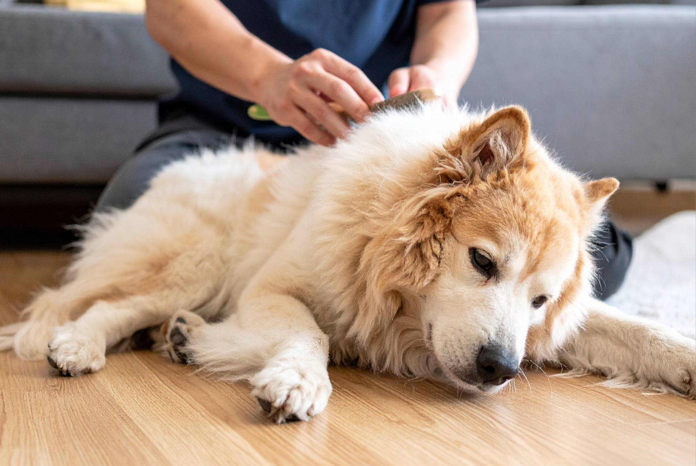

If you live with a dog or cat, you probably know the feeling: you clean the couch, turn around, and somehow there is already a fresh layer of fur covering it.
Pet hair has a way of finding its way into every corner of the home, but furniture tends to be one of its favorite places to collect. Sofas, chairs, ottomans, and even decorative pillows can quickly become covered in loose hair, especially during shedding season.
The good news? You don't need to constantly vacuum your entire living room to keep pet hair under control.
With a few simple habits and the right cleaning techniques, you can make pet hair much easier to manage. Here are five practical tips that can help keep your furniture looking cleaner for longer.
1. Brush Your Pet Regularly
One of the easiest ways to keep pet hair off your furniture is to deal with it before it gets there.
Regular brushing removes loose hair from your pet's coat before it has a chance to end up on your couch or favorite chair. How often you should brush depends on your pet's breed, coat type, and how much they shed. Some pets may benefit from daily brushing, while others may only need it a few times a week.
Brushing your pet outside can also help keep loose fur from accumulating indoors.
Think of it as preventative cleaning: the more hair you remove from your pet, the less hair you'll have to remove from your furniture.
2. Use a Damp Rubber Glove
When pet hair becomes embedded in upholstery, a vacuum isn't always the easiest solution.
A simple rubber cleaning glove can work surprisingly well. Put on a slightly damp glove and run your hand across the surface of your furniture. The friction helps gather loose hairs into small clumps, making them easier to pick up.
This works particularly well on sofas and other fabric-covered furniture where hair tends to become trapped between the fibers.
You can also use a damp microfiber cloth on harder surfaces, but avoid soaking upholstery. Too much moisture can create its own cleaning problems.
3. Cover Your Pet's Favorite Spot
If your dog or cat has claimed one particular corner of the couch, don't fight it. Work with it.
Place a washable blanket or furniture cover over their favorite spot. When it becomes covered in fur, simply shake it out and throw it in the wash.
This is especially helpful for pets that spend hours sleeping on the same cushion.
A washable cover doesn't just make cleanup easier. It can also help protect furniture from dirt, muddy paws, drool, and the occasional accident.
For a cleaner-looking home, choose a blanket that complements your furniture rather than treating it like a temporary eyesore. A practical solution doesn't have to look out of place.
4. Vacuum Furniture Before the Hair Builds Up
Waiting until your couch is completely covered in fur can make cleaning much more difficult.
Instead, add your furniture to your regular vacuuming routine. Use an upholstery attachment to go over cushions, seams, and the areas underneath pillows where hair tends to accumulate.
Pay special attention to corners and crevices. Pet hair often collects in places that aren't immediately visible, which is why a couch can look clean from across the room but still release a surprising amount of fur when you sit down.
For homes with heavy shedders, a quick furniture vacuum every few days may be more effective than waiting for one big cleaning session at the end of the week.
5. Clean More Than Just the Visible Surfaces
Pet hair doesn't always stay where you can see it.
It can collect underneath cushions, around the edges of furniture, on throw pillows, and even on nearby rugs and floors. Once it's disturbed, some of that hair can simply move back onto your freshly cleaned couch.
That's why keeping pet hair under control is really about creating a routine rather than relying on one cleaning trick.
Wash blankets and removable covers regularly. Vacuum around and underneath furniture. Clean pet beds frequently. And don't forget the places where your pet spends the most time.
The goal isn't to make your home completely pet-hair-free. If you have a furry companion, that's probably not realistic. The goal is to prevent hair from building up faster than you can manage it.
A Little Prevention Goes a Long Way
Living with pets doesn't mean your furniture has to be permanently covered in fur.
Regular brushing, washable covers, quick cleanups, and consistent vacuuming can make a noticeable difference. And by focusing on the areas your pet actually uses, you don't have to spend hours cleaning furniture that rarely gets touched.
The best cleaning routine is one that's easy enough to stick with.
So instead of waiting for your couch to disappear underneath a layer of fur, take a few minutes every couple of days to stay ahead of it. Your furniture — and your future self — will thank you.